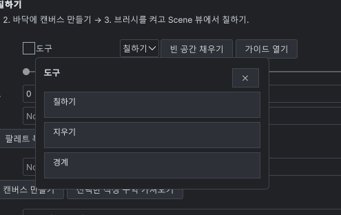

Tracefolio REPORTS & ISSUES
Tracefolio REPORTS & ISSUES공통 검색형 선택 메뉴와 Windows 작업 전환 개선
검증 대기Templete 1.9.0 공통 메뉴 및 Alt+Tab 등록 구현과 컴파일 검증을 마쳤습니다. 실제 화면 QA는 제어 중단으로 보류입니다.
작업 결과
큰 Inspector 버튼식 선택 목록을 공통 검색형 행 메뉴로 변경하고, 등록된 독립 제품 창의 Windows 작업 전환 등록 코드를 추가했습니다. 마지막 수정 소스 기준 10개 어셈블리가 컴파일됐습니다.
변경 내용
적용 내용
첨부 화면은 소스의 Pixel Foliage 팔레트 Tool 드롭다운과 일치합니다. 공통 Select/SelectMask를 통해 드롭다운·열거형·Inspector·레이어·플래그 선택을 검색창과 현재 값 체크, 간결한 행 디자인으로 연결했습니다. 다중 선택은 적용 전까지 임시 값이며 취소·Escape·바깥 클릭으로 원본을 보존합니다. 에셋 선택도 같은 행을 쓰고 DDT 차트 이동·표 스타일 적용·선택 폴백의 기본 메뉴 호출을 교체했습니다. UXML/USS가 정적 레이아웃을 소유합니다.
WindowServices.Register에서 독립 ToolWindow만 Windows 작업 전환 대상으로 구성하며 도킹 패널·툴팁·임시 메뉴는 제외합니다. 같은 프로세스의 고유한 제목으로 식별된 최상위 창에서 TOOLWINDOW/NOACTIVATE를 제거하고 APPWINDOW를 추가하며 owner를 해제합니다. 위치·크기·표시 상태·포커스를 바꾸는 호출은 넣지 않았습니다. 같은 제목이 모호하면 임의의 창을 선택하지 않습니다. Windows 확장 스타일 공식 문서를 확인했습니다.
Templete 1.9.0 및 DDT·Pixora·Pixel Camera·Pixel Foliage·Entity Forge 최소 요구 1.9.0을 기록하고 공통 안내 9개 언어를 갱신했습니다.

위 이미지는 사용자가 제공한 원본입니다. 이번 회차에서 직접 캡처한 화면이 아니며 변경 후 화면은 제어 중단으로 확보하지 않았습니다. 전후 비교 검증 완료로 표시하지 않습니다.
검증
설치된 Unity 6000.0.83f1 Roslyn으로 현재 소스의 관련 10개 어셈블리를 실제 컴파일했고 종료 코드가 모두 0입니다. 최종 편집한 C# 파일의 해시와 컴파일 결과의 소스 해시를 대조했습니다. UXML 2개 파싱, 메뉴 문자열 9언어와 공통 Regular/SemiBold 폰트의 체크 글리프를 확인했습니다. 원본 스타일 계산 메서드를 별도 콘솔 검증기에 포함해 보존 비트·제거/추가 비트·멱등성 1,024개를 실행했습니다. 이는 Windows 실제 Alt+Tab 검증이 아닙니다.
TemplatePickerPolicy 실제 실행은 Pixora·Pixel Camera·Pixel Foliage·Entity Forge 통과입니다. DDT는 기존 About의 EditorUtility.DisplayDialog로 실패하며 기존 저장·삭제 확인 대화상자도 남아 있습니다. 선택 메뉴 개선으로 제품 전체 기본 대화상자 제거를 인증하지 않습니다.
남은 사항
실제 라이트/다크 배치, 검색·마우스/키보드 선택과 값 반영·취소·Undo, 다중 창과 최소화/복원 후 Alt+Tab, 창 닫기·도메인 재로드 회귀는 미실행입니다. 사용자의 화면 제어 중단 요청을 유지하여 GUI 실행·전환·입력·재촬영을 하지 않았습니다. 현재 에디터가 이 소스를 로드했는지도 인증하지 않았으며 기존 ScreenshotManifest는 갱신하지 않았습니다. 문서의 새 안내에도 화면 검증 대기를 표시했습니다. 이번 소스 변경의 재패키징·스토어 업로드는 실행하지 않았고 심사 Submit도 누르지 않았습니다.
교훈 검토: 메뉴 항목을 Inspector 작업 버튼으로 그리지 않고 공통 검색 목록을 사용하며, 독립 제품 창의 작업 전환과 임시 UI 제외를 프로젝트 지침에 통합했습니다. 전역 지침은 Unity 템플릿에 한정된 요구이므로 변경하지 않았습니다. 파일 저장에서 실제 Windows 매핑 구역 열림 오류를 확인했고 앱 종료 없이 임시 파일의 원자적 교체와 재읽기로 수정했습니다.
작업 시간
- 제안 시간: 20–40분
- 실제로 완료된 시간: 시작 2026-11-04 12:34:30 KST. 구현·정적 검사 기록 2026-11-04T12:56:56.681083+09:00, 실제 경과 22분 26초. 전체 화면 QA는 미완료입니다. 공개 확인 시각은 최종 채팅에 별도 기록합니다.
- XERJ: 실패 — Status 노드 미실행, Search 시작 실패. stderr에 data directory lock을 확인했습니다. 알 수 없는 프로세스를 종료하지 않고 rg로 현재 소스를 대조했습니다.